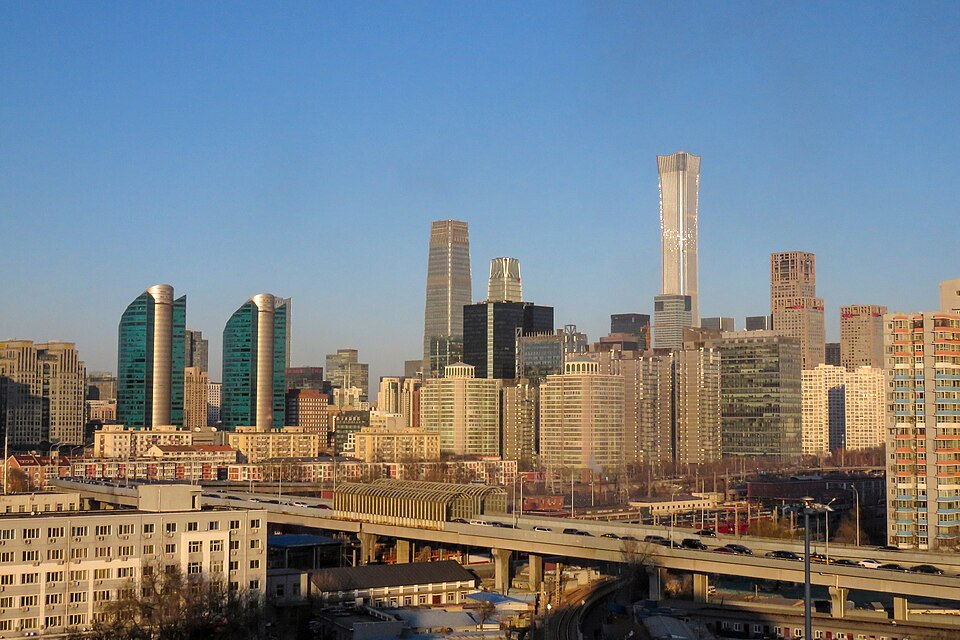
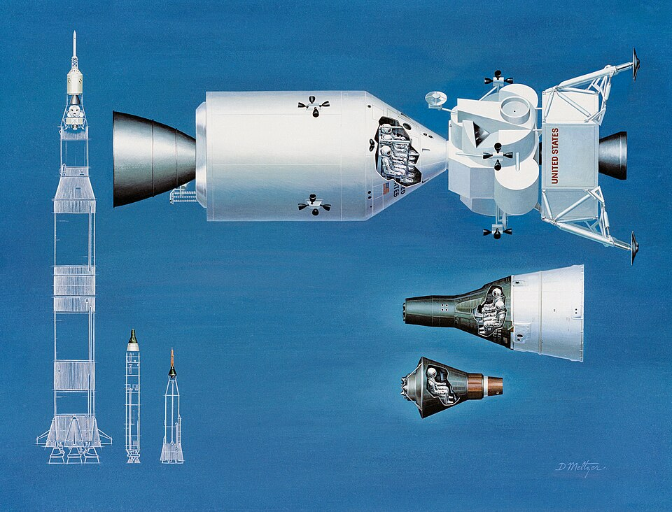
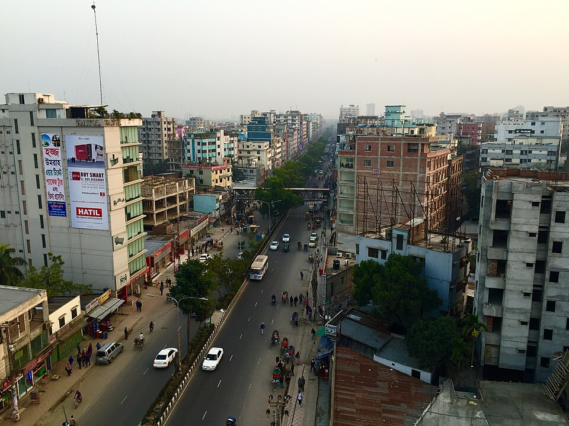

अंतरराष्ट्रीय
 अंतरराष्ट्रीय
अंतरराष्ट्रीयअमेरिका: दक्षिणी कैलिफोर्निया में मालगाड़ियों से 208 करोड़ की चोरी, 14 आरोपी
अमेरिका के दक्षिणी कैलिफोर्निया में मालगाड़ियों से करीब 208 करोड़ रुपये का सामान चोरी करने के मामले में अमेरिकी न्याय विभाग ने 14 लोगों पर केस दर्ज किया है।
अंतरराष्ट्रीयदादा साहब फाल्के अंतरराष्ट्रीय फिल्म फेस्टिवल 2026: 'धुरंधर' और 'सैय्यारा' का जलवा
दादा साहब फाल्के अंतरराष्ट्रीय फिल्म फेस्टिवल 2026 के विजेताओं की घोषणा कर दी गई है। फिल्म 'धुरंधर' और 'सैय्यारा' ने सबसे ज्यादा पुरस्कार जीते हैं।
अंतरराष्ट्रीयगुरपतवंत सिंह पन्नू हत्या साजिश मामला: निखिल गुप्ता को अमेरिका में 19 साल से अधिक की सजा
अमेरिकी अदालत ने खालिस्तानी अलगाववादी गुरपतवंत सिंह पन्नू की हत्या की साजिश से जुड़े मामले में भारतीय नागरिक निखिल गुप्ता को करीब 19 साल 7 महीने की सजा सुनाई है।
अंतरराष्ट्रीयपुतिन, ट्रंप और जिनपिंग की शेनझेन बैठक को रूस ने बताया ऐतिहासिक
रूस ने पुतिन, ट्रंप और जिनपिंग की त्रिपक्षीय बैठक को वैश्विक राजनीति में बदलाव का संकेत बताया है। हालांकि, इस बीच यूक्रेन पर रूसी हमले जारी हैं और शांति दावों पर सवाल उठ रहे हैं।
 अंतरराष्ट्रीय
अंतरराष्ट्रीयपाकिस्तानी मंत्री के भारत दौरे पर कांग्रेस का विरोध, सरकार ने दी सफाई
पाकिस्तान के जलवायु परिवर्तन मंत्री मुसादिक मलिक के दिल्ली दौरे पर कांग्रेस ने सरकार को घेरा है। विदेश मंत्रालय ने स्पष्ट किया है कि यह शंघाई सहयोग संगठन का बहुपक्षीय मंच है।
अंतरराष्ट्रीयअमेरिका-ईरान जंग के नौ महीने बाद भी दुनिया में नहीं बढ़ा खाने का संकट
अमेरिका-ईरान संघर्ष और खराब मौसम के बावजूद दुनिया भर में खाने-पीने की चीजों के दाम नियंत्रण में हैं। भरे हुए गोदामों और पर्याप्त स्टॉक के कारण वैश्विक स्तर पर अनाज संकट की आशंकाएं गलत साबित हुई हैं।
अंतरराष्ट्रीयपैंक्रियाटिक कैंसर के इलाज में मिली बड़ी कामयाबी, नई दवा से ट्यूमर नियंत्रित
पैंक्रियाटिक कैंसर के शुरुआती परीक्षण में कीमोथेरेपी के साथ नई दवा देने से कुछ मरीजों के ट्यूमर स्कैन में गायब दिखे। विशेषज्ञों ने इसे दशकों में सबसे बड़ी प्रगति बताया है।
 अंतरराष्ट्रीय
अंतरराष्ट्रीयअमेरिकी राष्ट्रपति ट्रंप ने एनवीडिया के पूर्व सीईओ जेन्सेन हुआंग का किया समर्थन
अमेरिकी राष्ट्रपति डोनाल्ड ट्रंप ने एनवीडिया के पूर्व सीईओ जेन्सेन हुआंग का समर्थन करते हुए उन्हें एक और मौका देने की वकालत की है। हालांकि, कंपनी के बोर्ड ने फिलहाल उनकी वापसी से इनकार किया है।
अंतरराष्ट्रीयशेनझेन में ट्रंप और शी जिनपिंग ने साथ देखी ‘Y.M.C.A.’ गाने की प्रस्तुति
चीन के शेनझेन में एक भोज के दौरान अमेरिकी राष्ट्रपति डोनाल्ड ट्रंप और चीनी राष्ट्रपति शी जिनपिंग ने ‘Y.M.C.A.’ गाने की प्रस्तुति साथ बैठकर देखी।
अंतरराष्ट्रीयनेपाल के प्रधानमंत्री बालेन शाह दो दिवसीय आधिकारिक दौरे पर रविवार को पहुंचेंगे दिल्ली
नेपाल के प्रधानमंत्री बालेन शाह पद संभालने के बाद अपनी पहली विदेश यात्रा पर रविवार को दिल्ली पहुंच रहे हैं। इस दौरान प्रधानमंत्री नरेंद्र मोदी और अन्य वरिष्ठ अधिकारियों के साथ द्विपक्षीय बैठकों में कई अहम मुद्दों पर चर्चा होगी।
अंतरराष्ट्रीयपोलैंड के हवाई क्षेत्र में गिरी रूसी मिसाइल, सैन्य अभ्यास के दौरान हुई घटना
पोलैंड में एक रूसी मिसाइल गिरने की घटना सामने आई है। प्रधानमंत्री डोनाल्ड टस्क के अनुसार, यह घटना तब हुई जब पश्चिमी देशों की सेनाएं इलाके में सैन्य अभ्यास कर रही थीं।
अंतरराष्ट्रीयपेरू में 6.8 तीव्रता का तेज़ भूकंप, लीमा में घरों से बाहर निकले लोग
मध्य पेरू में 6.8 तीव्रता का भूकंप आने से राजधानी लीमा में दहशत फैल गई और लोग सड़कों पर आ गए। संसद भवन को भी एहतियातन खाली कराया गया।
 अंतरराष्ट्रीय
अंतरराष्ट्रीयसिंधु जल संधि पर भारत का रुख स्पष्ट, विदेश मंत्रालय ने कहा- कोई बदलाव नहीं
भारत ने स्पष्ट किया है कि सिंधु जल संधि को लेकर उसका रुख पूरी तरह साफ है और इसमें कोई बदलाव नहीं आया है। यह बयान पाकिस्तानी मंत्री मुसादिक मलिक के दिल्ली दौरे के बीच आया है।
अंतरराष्ट्रीयअमेरिका में निखिल गुप्ता को पन्नू हत्या की साज़िश में 19 साल की सज़ा
американ फेडरल कोर्ट ने सिख अलगाववादी गुरपतवंत सिंह पन्नू की हत्या की साज़िश रचने के मामले में भारतीय नागरिक निखिल गुप्ता को 19 साल से अधिक की सज़ा सुनाई है।
अंतरराष्ट्रीयहोर्मुज जलडमरूमध्य में तेल टैंकर पर हमला, ईरान का अमेरिकी ड्रोन गिराने का दावा
ओमान के पास होर्मुज जलडमरूमध्य में एक तेल टैंकर के इंजन कक्ष में अज्ञात चीज से टक्कर की सूचना है। इसी बीच ईरान ने एक अमेरिकी ड्रोन को मार गिराने का दावा किया है, जिससे क्षेत्र में तनाव बढ़ गया है।
अंतरराष्ट्रीयबांग्लादेश में मजदूरों के प्रदर्शन के दौरान हिंसक झड़पें, दो की मौत
बांग्लादेश में पिछले 20 दिन से चल रहे मजदूरों के प्रदर्शन के दौरान हुई हिंसा में दो श्रमिकों की मौत हो गई, जबकि 543 लोग घायल हुए हैं। मानवाधिकार संगठन ने निष्पक्ष जांच की मांग की है।
 अंतरराष्ट्रीय
अंतरराष्ट्रीयडोनाल्ड ट्रंप ने भारत की 7% जीडीपी वृद्धि और कम ब्याज दरों की सराहना की
अमेरिकी राष्ट्रपति डोनाल्ड ट्रंप ने भारत की आर्थिक प्रगति की तारीफ करते हुए कहा कि कम ब्याज दरों और 7% जीडीपी वृद्धि जैसे रुख से अमेरिका भी 20% तक विकास दर हासिल कर सकता है।
अंतरराष्ट्रीयपॉप सिंगर टेलर स्विफ्ट को दादा साहब फाल्के इंटरनेशनल फिल्म फेस्टिवल अवार्ड
पॉप गायिका टेलर स्विफ्ट को वर्ष 2026 के दादा साहब फाल्के इंटरनेशनल फिल्म फेस्टिवल अवार्ड्स में इंटरनेशनल आर्टिस्ट ऑफ द ईयर के रूप में चुना गया है।
अंतरराष्ट्रीयसिंधु जल संधि पर भारत का रुख स्पष्ट, विदेश मंत्रालय ने कहा- कोई बदलाव नहीं
पाकिस्तान के मंत्री मुसादिक मसूद मलिक के नई दिल्ली दौरे के बीच विदेश मंत्रालय ने स्पष्ट किया है कि 1960 की सिंधु जल संधि पर भारत के रुख में कोई बदलाव नहीं आया है।
अंतरराष्ट्रीयअमृतसर के निखिल गुप्ता को अमेरिकी अदालत ने सुनाई 19 साल से अधिक की सजा
अमेरिका में सिख अलगाववादी गुरपतवंत सिंह पन्नू की हत्या की साजिश रचने के मामले में भारतीय नागरिक निखिल गुप्ता को अमेरिकी संघीय अदालत ने 235 महीने यानी 19 साल से अधिक की सजा सुनाई है।
अंतरराष्ट्रीयभारत ने एनएसए अजीत डोभाल और पूर्व रॉ प्रमुख को अमेरिकी अदालत के समन को किया खारिज
विदेश मंत्रालय ने एनएसए अजीत डोभाल और पूर्व रॉ प्रमुख सामंत गोयल को खालिस्तान समर्थक संगठन की याचिका पर अमेरिकी अदालत द्वारा जारी समन को पूरी तरह खारिज कर दिया है।
 अंतरराष्ट्रीय
अंतरराष्ट्रीयएससीओ फोरम में सीमा पार आतंकवाद के सवाल पर अटके पाकिस्तानी मंत्री
नई दिल्ली में आयोजित एससीओ सिविलिज़ेशनल डायलॉग फोरम में भाग लेने आए पाकिस्तान के मंत्री मुसादिक मलिक से जब सीमा पार आतंकवाद पर सवाल पूछा गया, तो वे सीधे जवाब देने से बचते नजर आए।
 अंतरराष्ट्रीय
अंतरराष्ट्रीयनेपाल के प्रधानमंत्री बालेन शाह 22 और 23 नवंबर को आएंगे भारत दौरे पर
नेपाल के प्रधानमंत्री बालेन शाह प्रधानमंत्री नरेंद्र मोदी के निमंत्रण पर 22 और 23 नवंबर को भारत की आधिकारिक यात्रा पर रहेंगे। जानकारों का कहना है कि इस दौरे पर कूटनीतिक हलकों की विशेष नजर है।
 अंतरराष्ट्रीय
अंतरराष्ट्रीयभारत सरकार ने पाकिस्तानी मंत्री मुसादिक मलिक को निजामुद्दीन दरगाह जाने की अनुमति नहीं दी
एससीओ सम्मेलन में शामिल होने दिल्ली आए पाकिस्तान के जलवायु मंत्री मुसादिक मलिक को केंद्र सरकार ने हजरत निजामुद्दीन दरगाह जाने की अनुमति नहीं दी है, हालांकि वह आगरा ताजमहल जा सकेंगे।
 अंतरराष्ट्रीय
अंतरराष्ट्रीयशेनझेन त्रिपक्षीय बैठक से पहले ट्रंप और पुतिन की अहम मुलाकात
चीन के शेनझेन में प्रस्तावित त्रिपक्षीय बैठक से पहले अमेरिकी राष्ट्रपति डोनाल्ड ट्रंप और रूसी राष्ट्रपति व्लादिमीर पुतिन ने मुलाकात की। क्रेमलिन के अनुसार, दोनों नेताओं ने यूक्रेन युद्ध और द्विपक्षीय संबंधों पर चर्चा की।
अंतरराष्ट्रीयएपीईसी शिखर सम्मेलन: शी जिनपिंग ने किया ट्रंप का स्वागत, पुतिन के स्वागत को लेकर चर्चा
चीन के राष्ट्रपति शी जिनपिंग ने शेनझेन में एपीईसी शिखर सम्मेलन के दौरान अमेरिकी राष्ट्रपति डोनाल्ड ट्रंप का हवाई अड्डे पर खुद स्वागत किया, जबकि रूसी राष्ट्रपति व्लादिमीर पुतिन के स्वागत की जिम्मेदारी एक वरिष्ठ अधिकारी ने निभाई थी।
अंतरराष्ट्रीयबांग्लादेश में हिंसक झड़पों के बाद सुरक्षा कड़ी, प्रधानमंत्री रहमान ने अवामी लीग पर लगाया साज़िश का आरोप
बांग्लादेश में पूर्व प्रधानमंत्री शेख हसीना की पार्टी के बंद के आह्वान के बाद भड़की हिंसा में चार लोगों की मौत हो गई है। प्रधानमंत्री तारिक रहमान ने अवामी लीग पर देश को अस्थिर करने का आरोप लगाया है।
अंतरराष्ट्रीयमार्वल कॉमिक्स ने आयरन मैन को दिया नया रूप, बने 'द आयरन थिंग'
मार्वल कॉमिक्स ने आगामी 'हल्क वॉर' स्टोरीलाइन के लिए आयरन मैन के नए और हैरान करने वाले रूप 'द आयरन थिंग' से पर्दा उठाया है।
अंतरराष्ट्रीयपॉप गायक ब्रूनो मार्स के पिता पीटर हर्नांडिज का 74 वर्ष की आयु में निधन
प्रसिद्ध पॉप गायक ब्रूनो मार्स के पिता पीटर हर्नांडिज का 74 वर्ष की आयु में निधन हो गया है। गायक ने सोशल मीडिया पर पिता को श्रद्धांजलि देते हुए उनके साथ अपनी यादें साझा कीं।

अंतरराष्ट्रीयशी जिनपिंग और पुतिन के साथ शिखर सम्मेलन से ट्रंप को क्या मिला
चीन में शी जिनपिंग और व्लादिमीर पुतिन के साथ हुई त्रिपक्षीय बैठक से अमेरिकी राष्ट्रपति डोनाल्ड ट्रंप को ठोस नतीजों के बजाय मुख्य रूप से भव्य तस्वीरें और राजनीतिक 'ऑप्टिक्स' हासिल हुए।
अंतरराष्ट्रीयकनाडा ने गोल्डी बराड़ को बनाया शीर्ष वांछित अपराधी, रखा इनाम
कनाडा ने वांछित गैंगस्टर गोल्डी बराड़ को अपने शीर्ष 25 सबसे अधिक वांछित अपराधियों की सूची में पहले स्थान पर रखा है। उसकी गिरफ्तारी के लिए दो लाख 50 हजार कनाडाई डॉलर का इनाम घोषित किया गया है।
 अंतरराष्ट्रीय
अंतरराष्ट्रीयअमेरिकी बैंक जेपी मॉर्गन पर साइबर हमला, 16 हजार ग्राहकों का डेटा लीक
अमेरिकी बैंक जेपी मॉर्गन ने थर्ड पार्टी वेंडर्स पर साइबर हमले का खुलासा किया है। इस घटना में करीब 16 हजार ग्राहकों का निजी डेटा लीक होने की आशंका जताई जा रही है।
अंतरराष्ट्रीयऑपरेशन सिंदूर के बाद पहली बार भारत आ रहे पाकिस्तानी मंत्री, एससीओ फोरम में लेंगे हिस्सा
ऑपरेशन सिंदूर के बाद पहली बार पाकिस्तान के मंत्री मुसादिक मसूद मलिक शंघाई सहयोग संगठन फोरम में हिस्सा लेने शुक्रवार को दिल्ली आ रहे हैं। प्रधानमंत्री नरेंद्र मोदी पुराना किला में इस कार्यक्रम का उद्घाटन करेंगे।
 अंतरराष्ट्रीय
अंतरराष्ट्रीयसोमालिया ने यूएई के राजदूत को निष्कासित किया, 72 घंटे में देश छोड़ने का आदेश
सोमालिया सरकार ने संप्रभुता के उल्लंघन का आरोप लगाते हुए यूएई के राजदूत को 72 घंटे में देश छोड़ने का आदेश दिया है और अपने राजदूत को भी वापस बुला लिया है।
अंतरराष्ट्रीयबांग्लादेश में हिंसा पर पीएम तारिक रहमान का विदेश से साजिश का आरोप
बांग्लादेश के प्रधानमंत्री तारिक रहमान ने पूर्व पीएम शेख हसीना और उनके समर्थकों पर विदेश से हिंसा और आगजनी की साजिश रचने का आरोप लगाया है।
अंतरराष्ट्रीयभारत-जापान 2+2 बैठक: पहली बार भारतीय रेंज में लाइव फायरिंग करेगी जापानी सेना
टोक्यो में हुई चौथी भारत-जापान 2+2 मंत्री स्तरीय बैठक में रक्षा और सामरिक सहयोग बढ़ाने पर सहमति बनी। जापानी सेना भारत में पहली बार लाइव फायरिंग अभ्यास करेगी और दोनों देश रक्षा तकनीक तथा आतंकवाद के खिलाफ मिलकर काम करेंगे।
अंतरराष्ट्रीयभारत में लंबी दूरी की मिसाइलों की टेस्टिंग करेगा जापान, टोक्यो में हुआ समझौता
भारत और जापान के बीच रक्षा सहयोग के तहत जापान की सेना अगले साल से भारत की फायरिंग रेंज में 1000 किमी रेंज वाली मिसाइलों का परीक्षण करेगी।

अंतरराष्ट्रीयनासा का वायेजर 1 अंतरिक्ष मिशन, पृथ्वी से एक प्रकाश-दिन दूर पहुंचने वाला पहला मानव निर्मित अंतरिक्षयान बना
नासा का वायेजर 1 अंतरिक्षयान पृथ्वी से एक प्रकाश-दिन की दूरी तय करने वाला इतिहास का पहला मानव निर्मित उपकरण बन गया है। यह अंतरिक्ष में अपनी स्थापना के करीब 50 साल पूरे करने के करीब है।
अंतरराष्ट्रीयसिद्धू मूसेवाला हत्याकांड का मास्टरमाइंड गोल्डी बराड़ कनाडा की वांटेड लिस्ट में शामिल
कनाडा ने कुख्यात गैंगस्टर और सिद्धू मूसेवाला हत्याकांड के मास्टरमाइंड गोल्डी बराड़ पर 2.5 लाख केंबियाई डॉलर का इनाम घोषित किया है। उसे देश के शीर्ष 25 वांछित अपराधियों की सूची में रखा गया है।
अंतरराष्ट्रीयशेनझेन में ट्रंप, शी जिनपिंग और पुतिन की ऐतिहासिक कूटनीतिक बैठक
चीन के शेनझेन शहर में अमेरिकी राष्ट्रपति डोनाल्ड ट्रंप, चीनी राष्ट्रपति शी जिनपिंग और रूसी राष्ट्रपति व्लादिमीर पुतिन के बीच वैश्विक शांति और व्यापार को लेकर अहम बैठक हो रही है.
 अंतरराष्ट्रीय
अंतरराष्ट्रीयबांग्लादेश में राजनीतिक तनाव के बीच पीएम तारिक रहमान की दलों से एकजुट होने की अपील
बांग्लादेश की पूर्व प्रधानमंत्री शेख हसीना के दिसंबर में संभावित स्वदेश लौटने की घोषणा के बाद देश में बढ़े राजनीतिक तनाव और हिंसा के बीच, प्रधानमंत्री तारिक रहमान ने सभी लोकतांत्रिक राजनीतिक दलों से एकजुट होने की अपील की है।
अंतरराष्ट्रीयसोनिया गांधी ने मानवाधिकार कार्यकर्ता ग्रासा माशेल को इंदिरा गांधी शांति पुरस्कार प्रदान किया
कांग्रेस संसदीय दल की अध्यक्ष सोनिया गांधी ने मोजाम्बिक की मानवाधिकार कार्यकर्ता ग्रासा माशेल को वर्ष 2025 के 'इंदिरा गांधी शांति, निरस्त्रीकरण और विकास पुरस्कार' से सम्मानित किया।
अंतरराष्ट्रीयभारत, अमेरिका, जापान और ऑस्ट्रेलिया 2027 में करेंगे पहला संयुक्त क्वाड समुद्री अभ्यास
भारत, अमेरिका, जापान और ऑस्ट्रेलिया ने मनीला में आयोजित क्वाड शिखर सम्मेलन में 2027 में पहले संयुक्त समुद्री सैन्य अभ्यास की घोषणा की है, जिससे यह समूह अब केवल संवाद तक सीमित नहीं रहा।

अंतरराष्ट्रीयबांग्लादेश में भड़की हिंसा, ढाका में देसी बम धमाके और तोड़फोड़
बांग्लादेश में अवामी लीग के बंद के दौरान व्यापक हिंसा भड़की है। राजधानी ढाका में देसी बम फटे और कई जगहों पर आगजनी व तोड़फोड़ की खबरें हैं, जिससे सुरक्षा हालात तनावपूर्ण हो गए हैं।
अंतरराष्ट्रीयप्यू रिसर्च सेंटर की नई रिपोर्ट में 2070 तक वैश्विक धार्मिक आबादी के बदलावों का अनुमान
प्यू रिसर्च सेंटर और पोलैंड के इंस्टीट्यूट फॉर द स्टडी ऑफ रिलिजन की नई रिपोर्ट के अनुसार, 2070 तक मुसलमानों की आबादी सबसे तेज़ी से बढ़ेगी और भारत हिंदू बहुल देश बना रहेगा।
अंतरराष्ट्रीयसउदी अरब के रियाद में हुती मिसाइल हमला, सॉवरन वेल्थ फंड की इमारत क्षतिग्रस्त
सउदी अरब ने रियाद के वित्तीय जिले में एक टावर पर हुती मिसाइल हमले की पुष्टि की है। इस इमारत में देश का सॉवरन वेल्थ फंड स्थित है।
अंतरराष्ट्रीयधार्मिक सवालों और फ़तवों के लिए एआई के इस्तेमाल पर छिड़ी बहस
इस्लामी सवालों के जवाब देने वाले 'क़ाफ़' एआई असिस्टेंट के लॉन्च के बाद दुनिया भर में धार्मिक मामलों में तकनीक के इस्तेमाल को लेकर बहस शुरू हो गई है।
अंतरराष्ट्रीय2035 तक मुस्लिम आबादी बन सकती है दुनिया का सबसे बड़ा धार्मिक समूह: रिपोर्ट
प्यू रिसर्च सेंटर की रिपोर्ट के अनुसार, उच्च प्रजनन दर और युवा आबादी के कारण 2035 तक मुस्लिम आबादी दुनिया का सबसे बड़ा धार्मिक समूह बन सकती है.
 अंतरराष्ट्रीय
अंतरराष्ट्रीयमैकडॉनल्ड्स पूर्व कर्मचारी का आरोप, युवा कर्मियों के सुरक्षा तरीके बदले कंपनी
मैकडॉनल्ड्स की पूर्व कर्मचारी होप ने कंपनी से कम उम्र के कर्मियों के सुरक्षा तरीकों को बदलने की अपील की है। लंदन की एक अदालत ने कंपनी के खिलाफ भेदभाव के सैकड़ों मामलों में कानूनी कार्रवाई आगे बढ़ाने की अनुमति दी है।
 अंतरराष्ट्रीय
अंतरराष्ट्रीयअंतरराष्ट्रीय न्यायालय ने म्यांमार को रोहिंग्या नरसंहार का दोषी ठहराया
अंतरराष्ट्रीय न्यायालय ने म्यांमार को रोहिंग्या समुदाय के नरसंहार का दोषी पाया है। अदालत के इतिहास में यह पहला मौका है जब किसी देश को इस अपराध के लिए जिम्मेदार ठहराया गया है।
अंतरराष्ट्रीयट्रंप, शी जिनपिंग और पुतिन के बीच ऐतिहासिक त्रिपक्षीय शिखर सम्मेलन
चीन के शेन्ज़ेन शहर में अमेरिकी राष्ट्रपति डोनाल्ड ट्रंप, चीनी राष्ट्रपति शी जिनपिंग और रूसी नेता व्लादिमीर पुतिन के बीच परमाणु हथियारों में कमी और वैश्विक स्थिरता को लेकर एक घंटे से अधिक लंबी बैठक हुई।
 अंतरराष्ट्रीय
अंतरराष्ट्रीयअमेरिका, रूस और चीन की शेनझेंन बैठक की तुलना याल्टा सम्मेलन से
अमेरिका, रूस और चीन के नेताओं के बीच शेनझेंन में होने वाली बैठक की तुलना 1945 के याल्टा सम्मेलन से की जा रही है। इस मुलाकात में परमाणु हथियारों और वैश्विक शक्ति संतुलन पर चर्चा हो रही है।
अंतरराष्ट्रीयAPEC शिखर सम्मेलन में ट्रंप, जिनपिंग और पुतिन की अहम बैठक, परमाणु वार्ता पर बनी सहमति
APEC शिखर सम्मेलन के दौरान अमेरिकी राष्ट्रपति डोनाल्ड ट्रंप, चीनी राष्ट्रपति शी जिनपिंग और रूसी राष्ट्रपति व्लादिमीर पुतिन के बीच ऐतिहासिक त्रिपक्षीय बैठक हुई, जिसमें परमाणु वार्ता और संयुक्त राष्ट्र सुधारों पर सहमति बनी।
 अंतरराष्ट्रीय
अंतरराष्ट्रीयपेरू में खराब मौसम और अल नीनो के खतरे के बीच फ्यूल सप्लाई इमरजेंसी घोषित
दक्षिण अमेरिकी देश पेरू ने अल नीनो के कारण भारी बारिश और बाढ़ की आशंका को देखते हुए देश भर में आठ महीने के लिए फ्यूल सप्लाई इमरजेंसी का ऐलान किया है।
अंतरराष्ट्रीयआवेदन के दो दशक बाद भी भारत को क्यों नहीं मिल पाई एपेक की सदस्यता?
एशिया पैसिफिक इकनॉमिक कोऑपरेशन (एपेक) शिखर सम्मेलन चीन में जारी है, लेकिन भारत आवेदन के बावजूद इसका हिस्सा नहीं है। कूटनीतिक और व्यापारिक वजहों से भारत की सदस्यता अब तक अटकी हुई है।
अंतरराष्ट्रीयचीन में शी जिनपिंग, डोनाल्ड ट्रंप और व्लादिमीर पुतिन के बीच त्रिपक्षीय बैठक शुरू
चीन के शेन्जेन में एपीईसी शिखर सम्मेलन के दौरान अमेरिकी राष्ट्रपति डोनाल्ड ट्रंप, चीनी राष्ट्रपति शी जिनपिंग और रूसी राष्ट्रपति व्लादिमीर पुतिन ने परमाणु हथियार, ईरान और यूक्रेन संघर्ष जैसे अहम मुद्दों पर उच्च स्तरीय बातचीत की।
अंतरराष्ट्रीययूक्रेन युद्ध खत्म करना चाहते हैं पुतिन: अमेरिकी राष्ट्रपति डोनाल्ड ट्रंप
चीन के शेनझेन में अमेरिकी राष्ट्रपति डोनाल्ड ट्रंप, रूसी राष्ट्रपति व्लादिमीर पुतिन और चीनी राष्ट्रपति शी जिनपिंग की बैठक हुई। ट्रंप ने कहा कि पुतिन और यूक्रेन इस संघर्ष को समाप्त करना चाहते हैं।